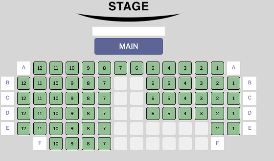
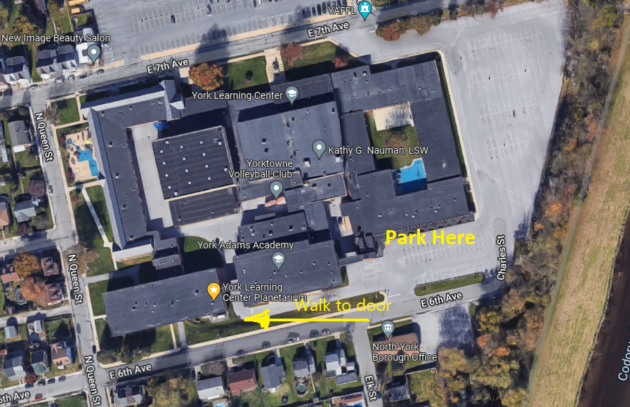
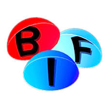

YLC Planetarium Shows
The York County Astronomical Society, celebrating 19 years offering planetarium programs to the public, now offering Saturday afternoon and evening programs at the York Learning Center Planetarium.
Saturday February 22, 2025
- 7:00PM - From Earth to the Universe
- 7:40PM - StarWatch
- 8:20PM - Hot and Energetic Universe
The planetarium is located in the York Learning Center at 301 East 6th Avenue, York PA. Admission is $4.00 for adults, $3.00 for children and seniors. Admission to any second or third show is $1.00 each. Cash and most credit and debit cards are accepted.
Private show reservations are available for $40 for a 45 minute program for up to 60 people.
In person ticket sales start at 6:30pm the day of the show. We reserve the right to ask any disruptive persons to leave the Planetarium.
Online ticket sales are available
Cur8.com is hosting a ticket sales site for our programs until 2 hours before showtime. The site charges a non-refundable fee of about $1.25 per ticket and you are able to reserve a seat in the planetarium. Because of the pricing model of Cur8.com, ticket purchases are for the 7:00pm, 7:40pm, and 8:20pm group of shows.
Please be curtious and not leave empty seats between groups.

Click here to purchase online tickets
You do not need to print the tickets, just present photo identification.
StarWatch
Learn how to find the planets and constellations that are visible in York’s night sky. Become a star watcher by exploring the current night sky, locate visible planets and constellations, and enjoy some sky lore. Receive a star map and get answers to questions such as:
* What can be seen with a telescope tonight?
* How do I find the North Star?
* Is there really a bear in the sky?
* Why do stars have different colors?
* What are the names of the brightest stars?
* Why does Jupiter have different colored clouds?
From Earth to the Universe
The night sky, both beautiful and mysterious, has been the subject of campfire stories, ancient myths and awe for as long as there have been people. A desire to comprehend the Universe may well be humanity’s oldest shared intellectual experience. Yet only recently have we truly begun to grasp our place in the vast cosmos. To learn about this journey of celestial discovery, from the theories of the ancient Greek astronomers to today’s grandest telescopes, we invite you to experience From Earth to the Universe.
Hot and Energetic Universe
“The Hot and Energetic Universe” presents the fascinating world of high energy astrophysics. High energy astrophysics plays a key role in understanding the universe, as these radiations reveal the processes in the hot and violent universe. High energy astrophysics probes hot gas in clusters of galaxies, which are the most massive objects in the universe. It also probes hot gas accreting around supermassive black holes in the centers of galaxies. Finally, high energy radiation provides important information about our own galaxy, neutron stars, supernova remnants and stars like our Sun which emit copious amounts of high-energy radiation. Come and learn about your hot and energetic universe!
For more information on events, scheduling a private party star watch, directions to the observing site, or for general Society information please contact us at info@astroyork.com or leave a voice message after the recording at 717 759-9227 or visit our Facebook page

The Planetarium wishes to recognize and thank the British Fulldome Institute for programming support. 